Travail de Fin d'Etudes
Etude et développement des applications RTLNet
Plan
- Présentation de RTLNet
- Organisation du travail
- Projets
- Concours de pronostics pronostics.rtl.fr
- Application mobile Snappy
- Fondée en 2000
- 30 salariés

Plus de 20 projets


Méthode Scrum

- Itérations
- Réunion de priorisation
Processus

Jira

Processus
Jenkins

Monitoring

Processus
Run Deck

Script Groovy
def deployWebapp(String version, String tomcatConfResolver) {
mkdirs()
assertExists()
log "Deploying $name - $version"
inTempDirectoy { File tempDir ->
def war = new File(tempDir, "ROOT.war")
new NexusArtifact(name: name, version: version, extension: 'war')
.downloadTo(war)
stopTomcat()
updateTomcatConf(version, tomcatConfResolver)
new File("$webappDir/webapps").deleteDir()
new File("$webappDir/work").deleteDir()
new File("$webappDir/webapps").mkdirs()
new File("$webappDir/work").mkdirs()
log "Copying war to $webappDir/webapps/ROOT.war"
new AntBuilder().move(file: war,
toFile: new File(webappDir, "webapps/ROOT.war"),
overwrite: true)
startTomcat()
}
}
Processus
Kibana

Processus
Contexte & Besoin

- Concours de pronostics hippiques
- Reprise de la ligue 1
Développement par les tests
- Code plus fiable
- Intégration continue

Test first
@Test
public void computeEarningsForGame1MaxScore() {
FootballBetPronostic pronostic = FootballBetPronostic.forGame(gameOfTheDay1());
int expectedAmount = 0;
String explanation = "Webdev 2-1 Studio (56' Damien, 87' Olivier, 88' Fred)";
pronostic.setGameOutcome(FootballGameOutcome.HOME_VICTORY);
expectedAmount += FootballEarnings.GAMEOFTHEDAY_GAME_OUTCOME
+ FootballEarnings.FAVORITE_TEAM_BONUS;
explanation += " : résultat +" + FootballEarnings.GAMEOFTHEDAY_GAME_OUTCOME;
explanation += " bonus équipe favorite +" + FootballEarnings.FAVORITE_TEAM_BONUS;
pronostic.setScore(new FootballScore(2, 1));
expectedAmount += FootballEarnings.SCORE;
explanation += " score +" + FootballEarnings.SCORE;
pronostic.withHomeStrikers(damien, olivier);
pronostic.withAwayStrikers(fred);
expectedAmount += 3 * FootballEarnings.STRIKER;
explanation += " buteurs +" + 3 * FootballEarnings.STRIKER;
FootballBetEarnings result = FootballEarningsComputer
.computeEarnings(pronostic, gameOfTheDay1(), "webdev");
assertThat(result.getAmount()).isEqualTo(expectedAmount);
assertThat(result.getGoodPronosticCount()).isEqualTo(1);
assertThat(result.getGuessedStrikerCount()).isEqualTo(3);
assertThat(result.getGoodPronosticCountForFavoriteTeam()).isEqualTo(1);
assertThat(result.getExplanation()).isEqualTo(explanation);
}
private FootballGame game1() {
FootballGameResult result = new FootballGameResult().withScore(2, 1);
result.setHomeStrikers(new FootballGameStriker(damien, "56'"), new FootballGameStriker(olivier, "87'"));
result.setAwayStrikers(new FootballGameStriker(fred, "88'"));
return game("game1", result);
}
En Groovy...
@Test
public void computeEarningsForGame1MaxScore() {
FootballBetPronostic pronostic = new FootballBetPronostics(gameId: gameOfTheDay1().id);
int expectedAmount = 0;
String explanation = "Webdev 2-1 Studio (56' Damien, 87' Olivier, 88' Fred)";
pronostic.setGameOutcome(FootballGameOutcome.HOME_VICTORY);
expectedAmount += FootballEarnings.GAMEOFTHEDAY_GAME_OUTCOME
+ FootballEarnings.FAVORITE_TEAM_BONUS;
explanation += " : résultat +" + FootballEarnings.GAMEOFTHEDAY_GAME_OUTCOME;
explanation += " bonus équipe favorite +" + FootballEarnings.FAVORITE_TEAM_BONUS;
pronostic.setScore(new FootballScore(2, 1));
expectedAmount += FootballEarnings.SCORE;
explanation += " score +" + FootballEarnings.SCORE;
pronostic.withHomeStrikers(damien, olivier);
pronostic.withAwayStrikers(fred);
expectedAmount += 3 * FootballEarnings.STRIKER;
explanation += " buteurs +" + 3 * FootballEarnings.STRIKER;
FootballBetEarnings result = FootballEarningsComputer
.computeEarnings(pronostic, gameOfTheDay1(), "webdev");
assert result.amount == expectedAmount
assert result.goodPronosticsCount == 1
assert result.guessedStrikerCount == 3
assert result.goodPronosticCountForFavoriteTeam == 1
assert result.explanation == explanation
}
private FootballGame game1() {
FootballGameResult result = new FootballGameResult(homeScore: 2, awayScore: 1);
result.setHomeStrikers(new FootballGameStriker(player: damien, minute: "56'"),
new FootballGameStriker(player: olivier, minute: "87'"));
result.setAwayStrikers(new FootballGameStriker(player: fred, minute: "88'"));
return new FootballGame(externalId: "game1", result: result,
homeGameTeam: new FootballGameTeam(team: webdev), awayGameTeam: new FootballGameTeam(team: studio));
}
Modèle de données & Algorithme
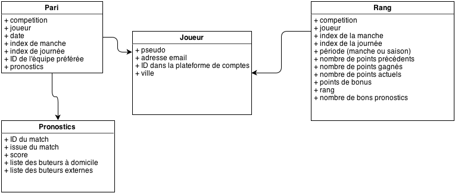
Calcul des points
public static FootballBetEarnings computeEarnings(FootballBetPronostic pronostic,
FootballGame game, String favoriteTeamExternalId) {
if (game.getResult() == null || pronostic == null || pronostic.getGameOutcome() == null ||
game.isPostponed()) {
return null;
}
FootballBetEarnings result = new FootballBetEarnings();
result.setExplanation(game.getLiteralFullResult() + " :");
if (game.hasOutcome(pronostic.getGameOutcome())) {
result.increaseAmount("résultat", game.isGameOfTheDay() ?
FootballEarnings.GAMEOFTHEDAY_GAME_OUTCOME : FootballEarnings.GAME_OUTCOME);
result.setGoodPronosticCount(1);
if (game.hasTeam(favoriteTeamExternalId)) {
result.increaseAmount("bonus équipe favorite", FootballEarnings.FAVORITE_TEAM_BONUS);
result.increaseGoodPronosticCountForFavoriteTeam();
}
} else {
result.increaseAmount("résultat", game.isGameOfTheDay() ?
-FootballBetCharges.GAMEOFTHEDAY_GAME_OUTCOME : -FootballBetCharges.GAME_OUTCOME);
}
if (game.isGameOfTheDay()) {
if (pronostic.hasScore()) {
int scoreEarnings = -FootballBetCharges.SCORE;
if (game.hasOutcome(pronostic.getGameOutcome())) {
if (game.hasScore(pronostic.getScore())) {
scoreEarnings = FootballEarnings.SCORE;
} else {
scoreEarnings = 0;
}
}
result.increaseAmount("score", scoreEarnings);
}
if (pronostic.hasStrikers()) {
result.updateStrikersEarnings(pronostic, game.getResult());
}
}
return result;
}
Calcul du rang
public void computeRankings(FootballMatchDay matchDay) {
computeRoundPoints(matchDay);
computeRanks(matchDay, Period.ROUND);
computeSeasonPoints(matchDay);
computeRanks(matchDay, Period.SEASON);
if (footballSponsorshipService.computeSponsorshipEarnings(matchDay)) {
computeRanks(matchDay, Period.ROUND);
computeRanks(matchDay, Period.SEASON);
}
}
public void computeRoundPoints(FootballMatchDay matchDay) {
for (Gamer gamer : findGamers(matchDay, Period.ROUND)) {
FootballRanking ranking = FootballRanking.forMatchDay(matchDay);
ranking.setPeriod(Period.ROUND);
ranking.setGamer(gamer);
FootballRanking yesterdayRanking = findYesterdayRank(matchDay, Period.ROUND, gamer);
if (yesterdayRanking != null) {
ranking.readPreviousRank(yesterdayRanking);
} else {
ranking.setBonus(FootballEarnings.ROUND_START_BONUS);
FootballSponsorship sponsorship = footballSponsorshipService.
getSponsor(matchDay.getCompetition(), gamer.getProfileId());
if (sponsorship != null && !sponsorship.isEarnedRegistrationBonus()
&& sponsorship.isDateCompliant(matchDay)) {
ranking.addSponsorshipBonus(FootballEarnings.SPONSORED_REGISTRATION);
}
}
// today's bet
FootballBet bet = footballBetService.findBet(matchDay, gamer.getProfileId());
ranking.readBet(bet);
if (yesterdayRanking != null || bet != null) {
if (bet != null && bet.getRank() == 1) {
ranking.addReward(new FootballEarnedReward(FootballReward.TROPHEE, matchDay.getIndex()));
}
updateRank(matchDay, ranking);
}
}
}
Prototype Bootstrap

Responsive design


Contexte & Besoin
- Outil mobile pour envoyer une ébauche d'article avec médias directement dans le CMS

Utilisation
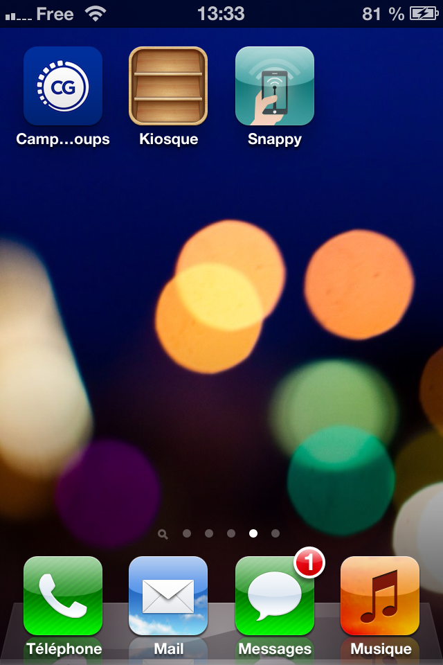 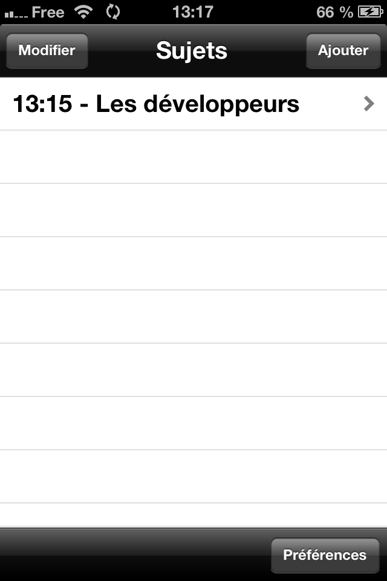 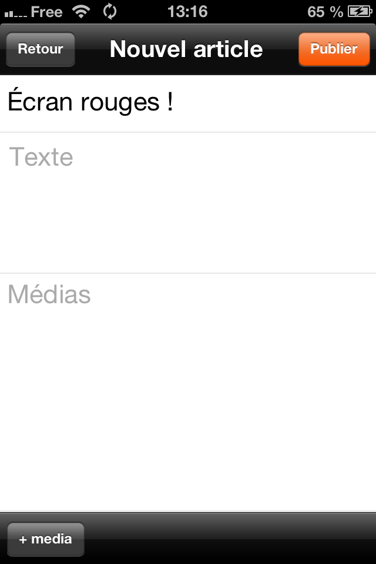 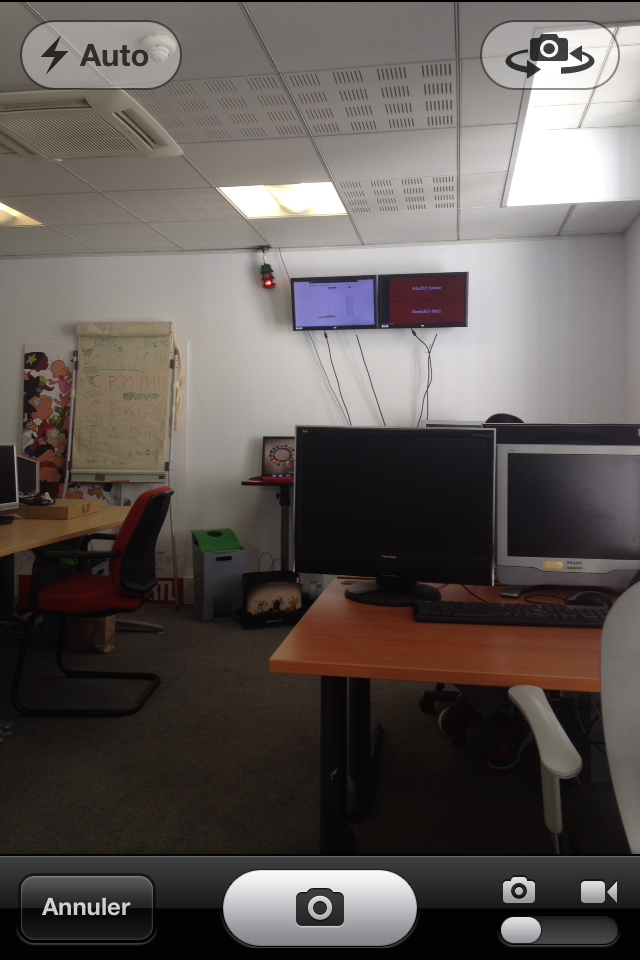 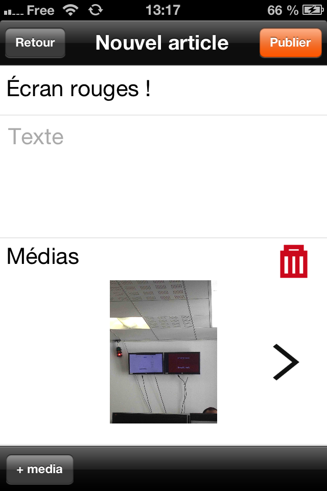 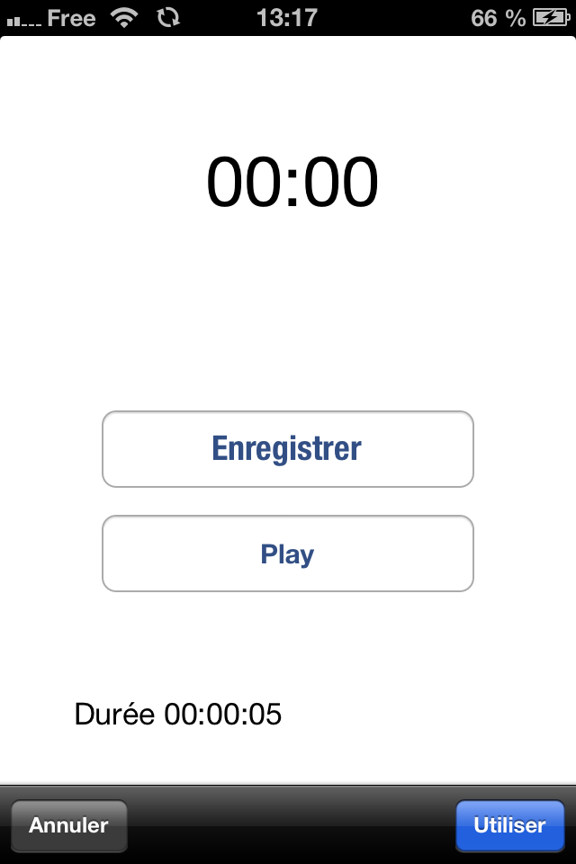 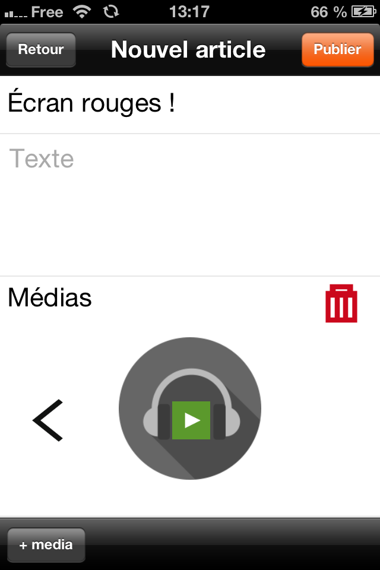
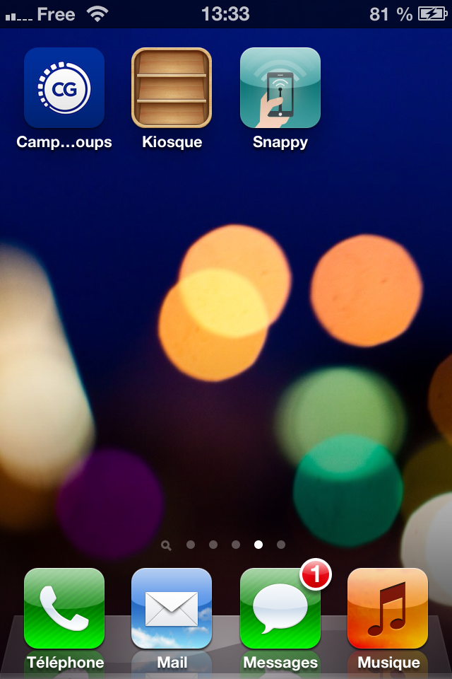 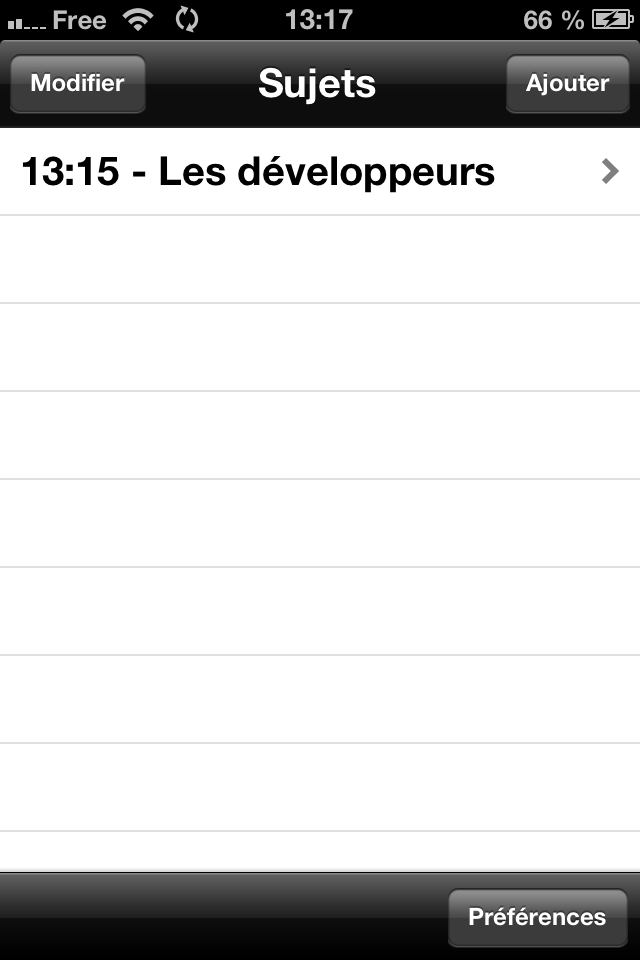 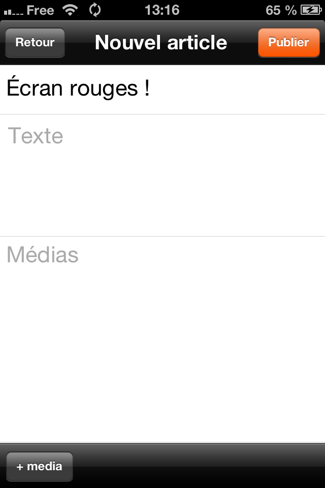 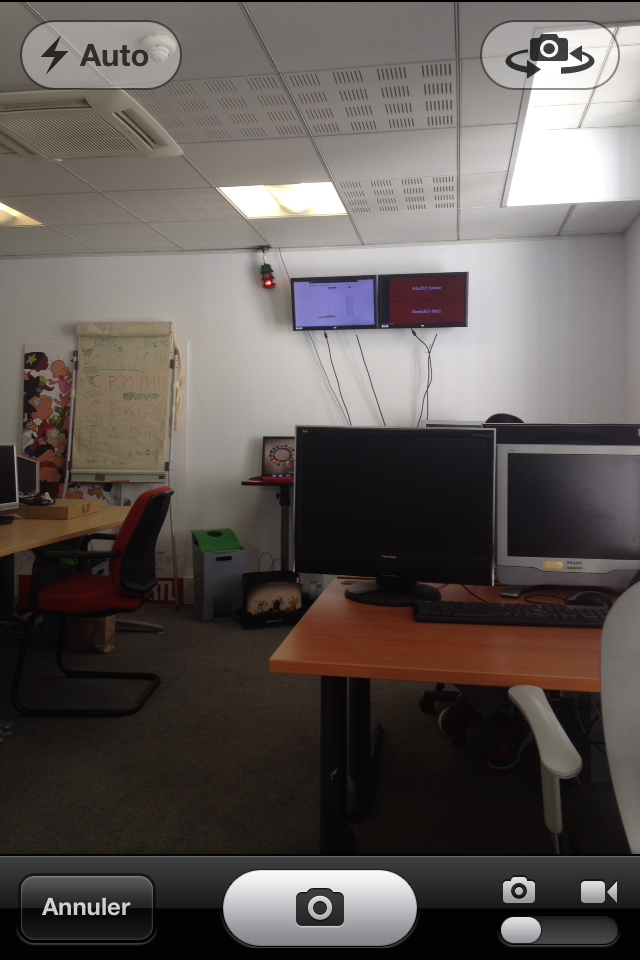 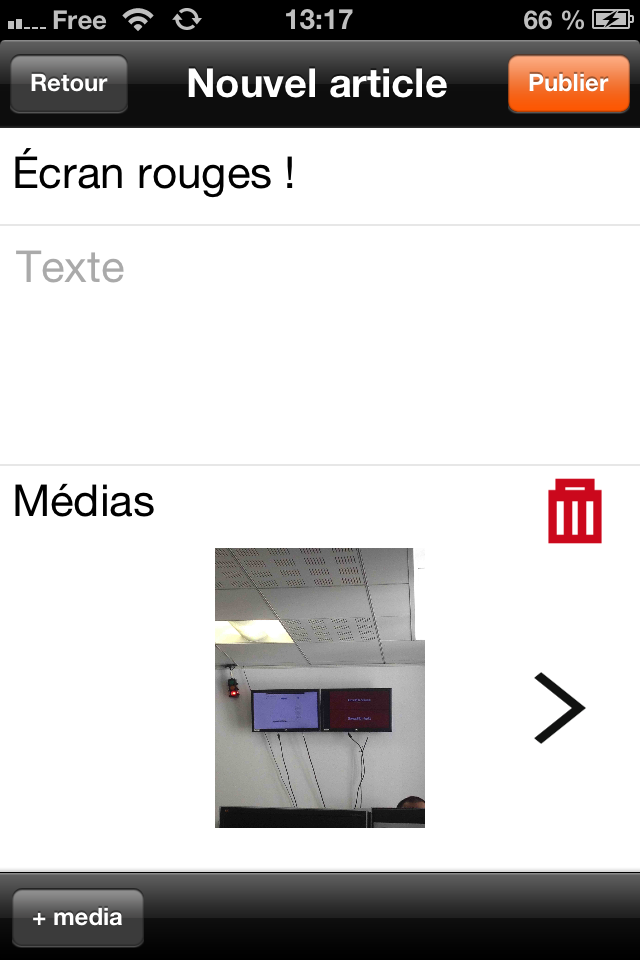 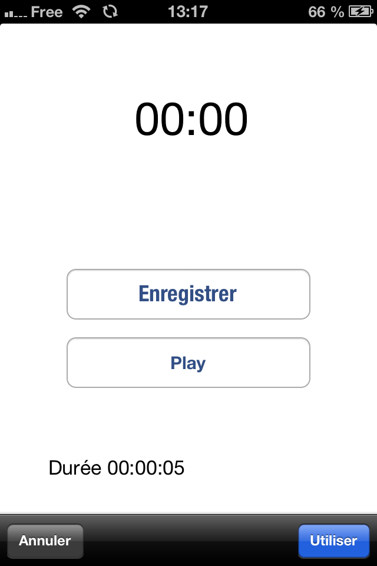 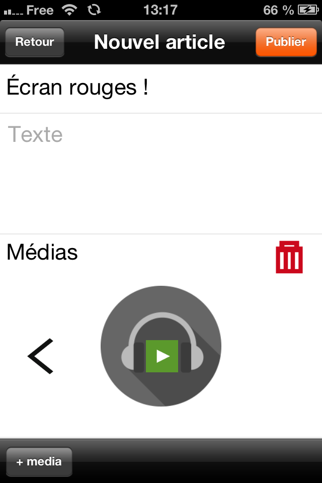
Persistence des données
- Framework CoreData
- Gestionnaire de fichiers NSFileManager
Interface avec une autre application
//méthode appellée lors d’une ouverture externe
-(BOOL)application:(UIApplication *)application openURL:(NSURL *)url
sourceApplication:(NSString *)sourceApplication annotation:(id)annotation
{
// vérification de la source de l’appel
if ([sourceApplication hasPrefix:@"com.appcoda"])
{
// récupération des données
UIPasteboard *pasteboard = [UIPasteboard generalPasteboard];
NSData *data = [pasteboard dataForPasteboardType:@"fr.rtl.snappy"];
if (data) {
//ajout des données à l’application
}
}
return YES;
}